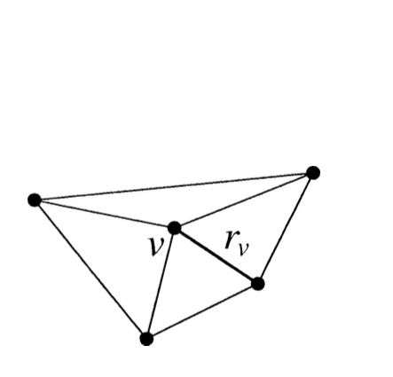
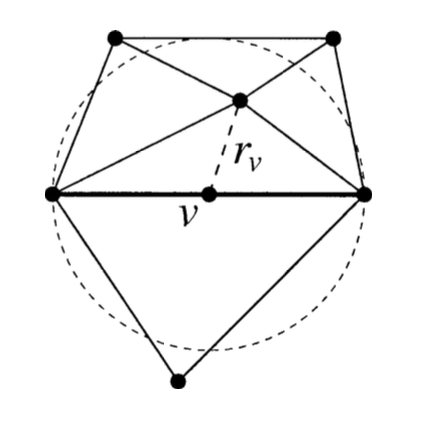
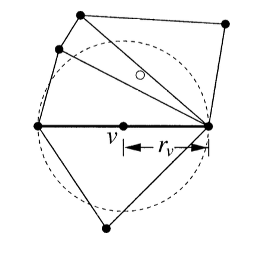
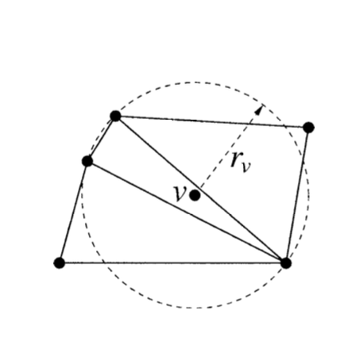
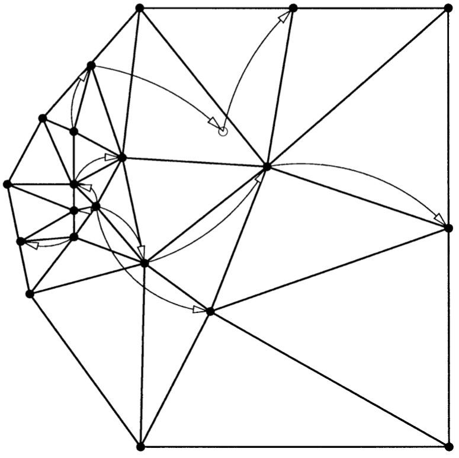
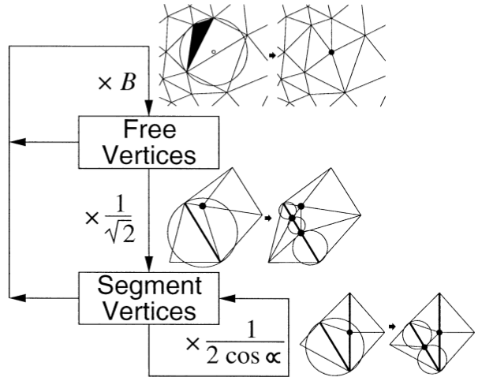

1. Fall - durch den neuen Knoten enstehen encroached subsegments
2. skinny triangles entfernen
2. Fall - durch den neuen Knoten enstehen keine encroached subsegments
Wieso in dieser Reihenfolge?
Wenn keine encroached subsegments vorhanden sind, liegen neue Knoten immer innerhalb des Graphen
Gilt nur unter diesen Bedingungen:
Schranke \( B \ge \sqrt{2}\)
kleinster Winkel \( \alpha \ge 60 \)°
local feature size
kleinster Umkreis eines Punktes welcher zwei nicht inzidente Merkmale enthält
Einfügeradius
Eingabeknoten (PSLG)

Einfügeradius
Segmentknoten (encroached subsegment)

Einfügeradius
verworfene Knoten (skinny triangle)

Einfügeradius
freie Knoten (skinny triangle)

Elternknoten
beschreiben Herkunft eines Knotens

Änderung des Einfügeradius bei Kindsknoten

Schranke \( B \ge \sqrt{2}\)
kleinster Winkel \( \alpha \ge 60 \)°
Kindsknoten von Input-Knoten
\( r_v \ge lfs(v) \)
Kindsknoten von freien Knoten
\(r_v \ge B*r_p\)
Segment Knoten - verworfener Elternknoten
\( r_v \ge \frac{1}{\sqrt(2)} \)
Diese Betrachtungen sind ausreichend um die Terminierung bei Graphen deren kleinster Winkel \( \ge 90° \) ist zu beweisen.
Da wir aber Graphen mit kleinsten Winkeln \( \ge 60° \) unterstützen, müssen wir noch weitere Fälle untersuchen.
Kindsknoten von Segment Knoten
p und v auf inzidenten Kanten \( 45° \le \alpha < 90° \)
\( r_v > \frac{r_p}{2\cos{\alpha}} \)
Kindsknoten von Segment Knoten
p und v auf inzidenten Kanten \( \alpha \le 45° \)